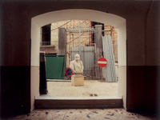
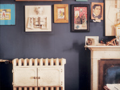

| Titolo | Anteprima | Pezzi disponibili | Prezzo (in euro) | Link |
|---|---|---|---|---|
| Luigi Ghirri - Capri, 1981 – serie Paesaggio italiano - 5.7 x 8.5 cm | 5 | 950 | Aggiungi al carrello | |
| Luigi Ghirri - San Martino Valle Caudina, 1990 – serie Paesaggio italiano - 8 x 10 cm |  | 4 | 820 | Aggiungi al carrello |
| Luigi Ghirri - Milano, 1989-90 – serie Studio di Aldo Rossi - 5.5 x 7 cm |  | 2 | 680 | Aggiungi al carrello |
| ANDRE KERTESZ, Broken_Bench, NY, 1962 | 3 | 1.600 | Aggiungi al carrello | |
| ELLIOTT ERWITT, Prado Museum, SPAIN, Madrid, 1995 | 2 | 1.150 | Aggiungi al carrello |